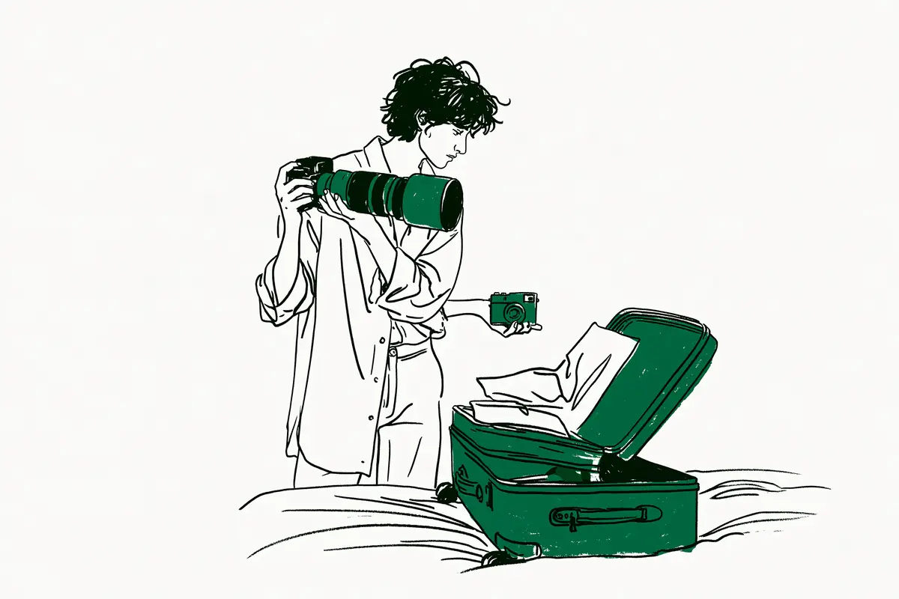

現在地: 買う前に迷ってる
旅行に一眼レフは邪魔?持っていった人・軽くした人・置いていった人の声

旅行に一眼レフ(鏡を使ってのぞくタイプのカメラ。言葉の意味)を持っていって邪魔だった人は12人、困らなかった人は35人、両方の場面を書いた人は14人、重くてミラーレスやコンデジに替えた人は21人でした。コンデジはレンズを交換できない小型のカメラ、ミラーレスはセンサー(光を受け止める板)が見た映像を画面でのぞくタイプのカメラです。置いていってよかった人は11人で、置いていって物足りなかった人は7人。手持ちの一眼レフを置いて後悔した、と書いたのは購入リンクのないサイトでは1人だけです。
私はカメラを持っていないので、知恵袋・note・個人ブログで、自分が旅行にカメラを持っていった・置いていった・借りた話を書いた人の声を集めて整理する側です。検索で上に出るまとめ記事にほとんどなかったのは、同行者の話でした。読んだ中で同行者に触れた人は6人、そのうち怒られたと書いた人は2人です。
- まだ買う前で、旅行のために買うか迷っている → 旅の主役・同行者・スマホで足りなかった場面
- 持っていて、今度の旅行に持っていくか迷っている → 次はこうすると書いていたことと予備バッテリーの節
- もう旅行で邪魔だった、または物足りなかった → 邪魔だった人、置いていった人、軽くした人
- 全体を見たい → 旅行のかたち別の早見表
旅行のかたち別: 一眼レフを持っていった人・置いていった人のその後(早見表)
旅行のかたちごとに、持っていった人と、置いていった・軽くした人の例を並べました。例は「理由 → その人がどうしたか」の形で、1人ずつの話です。
| 旅行のかたち | 持っていった人の例 → その後 | 置いていった・軽くした人の例 → その後 |
|---|---|---|
| 海外旅行(長い旅) | 38日間の旅で三脚は持たず → 盗難も破損もなく帰国、三脚は持ってこなくて正解 | 重いのと治安が不安で置いていった → スマホの写真の画質に後悔し、以後は毎回持参 |
| 新婚旅行・夫婦の旅 | 大きな一眼レフとレンズ5本 → 相手に怒られた | 乗馬など移動が多いのでコンパクトなカメラ2台 → 一眼レフでは無理だったと |
| 家族旅行・子連れ | 家族旅行にも重いレンズごと持っていく → その重さを承知で使いたい | 子どもを抱っこするとき邪魔 → コンパクトカメラに。一眼レフは趣味の撮影だけに |
| 友人との旅・団体 | 会話の輪に入らず後ろからついていく → 早くついてこいと怒られた | 社員旅行には持たず、家族旅行には持つ(2007年) |
| 暑い国・雨の旅 | ベトナムにミラーレスを首に掛けて手で持つ → 狙われることはなかった | 一眼レフとコンデジを持ち、暑さで1日だけコンデジ → 写真を見て後悔。雨続きで携帯だけ → 置いてよかった |
| 山・移動の多い旅 | 山でレンズを交換するのは手間で、登り下りも遅くなる | 自転車の移動が増えてミラーレスを追加 → 重さが気にならなくなった(2010年) |
数えたのは、旅行にカメラを持っていった・置いていった・借りた・旅行のために買った話を、自分のこととして書いた114人です。内訳は知恵袋62人、コスプレ知恵袋(コスプレ撮影をする人のQ&Aサイト)11人、note 18人、個人ブログ23人。立場の分け方は私の読み方で、1人が2つ以上に入ることがあります。
| 立場(私の読み方) | 人数 |
|---|---|
| 持っていって困らなかった・よかった | 35人 |
| 持っていって邪魔だった・後悔した | 12人 |
| 邪魔な場面とよかった場面の両方を書いた | 14人 |
| 重くてミラーレス・コンデジなど軽い構成に替えた | 21人 |
| 置いていって(スマホなどで)よかった・十分だった | 11人 |
| 置いていって物足りなかった(持っていけばよかった) | 7人 |
| 旅行のために借りた(検討で終わった2人を含む) | 8人 |
| 旅行のために買った(カメラ・レンズ・電池・バッグ。検討中1人を含む) | 12人 |
| 盗難・データの紛失にあった(未遂1人を含む) | 5人 |
困らなかった35人のうち15人は、盗難や持ち運びの相談への回答で、何もなかった・こう運んだと書いた人です。持っていくかどうかを自分で迷った話ではないので、多い少ないの比べ方には向きません。2006〜2011年の知恵袋は携帯電話がガラケーの時代なので、本文では年を添えました。集め方の偏りは数え方と偏りにあります。
旅のあとで、次はこうすると書いていたこと5つと、私からの提案1つ
すでにカメラを持っていて、今度の旅行に持っていくか迷っている人向けに、読んだ声の中で、旅のあとに次はこうすると書いていたことを並べます。した人がいた、という意味で、私が勧めているのではありません。
- レンズを1本にする。 写真が主目的でない観光旅行は便利ズーム(広い範囲から遠くまで1本でまかなうズームレンズ)を付けっぱなしにする人がいました。新婚旅行に普段のカメラとレンズ1本だけ持っていった人もいます(同行者の節)。単焦点(写る範囲が決まったレンズ)を持っていったのに、ほとんど使わなかった人は1人です
- 三脚は置いていく。 38日間の旅で持ってこなくて正解だった人、ホテルに置きっぱなしになった人がいます。2人ともカメラの紹介もしているサイトで、1人は観光ではなく撮影の旅です(邪魔だった人の節)
- 持ち歩く日と、置いていく日を決める。 自由時間は持ち歩かない人、必要な道具以外はホテルに置いた人、今日はカメラはいいやと思う日がある人がいました(盗難の節、同行者の節)
- 軽いカメラやレンズを足す。 旅行用に薄いレンズを中古で買った人、ポケットに入るコンデジに替えた人がいます(軽くした人の節)
- 予備バッテリーと充電器を確かめる。 残量4%でひやっとした人、4個目でやっと安心した人、充電器を見つけたので一眼レフを持ち出すと決めた人がいます(予備バッテリーの節)
私からの提案は、同行者に、撮りたい場所と時間を先に話しておくことです。読んだ声には、新婚旅行で相手に怒られた人、早くついてこいと怒られた人がいましたが、先に話しておいたと書いた人は見当たりませんでした。
旅行のためにカメラを買うか迷っている人へ: 旅の主役・同行者・スマホで足りなかった場面
「旅行 カメラ いらない」で検索する人の多くは、まだ買う前だと思います。読んだ声から、買う前に自分で確かめられることを3つにしました。カメラ全般の買う前の順番は、カメラを買うか迷ったら読む順番にあります。
- 旅の主役は、写真か、旅か。 写真が主目的でない観光旅行なら便利ズーム1本という回答者(2015年)、妻との旅行を楽しむかで迷った質問者(2023年)がいました。高額なカメラを持つと旅行の目的が撮影になる、という回答者もいます(2022年、助言)。職業カメラマンの回答者は、こう書いていました。
自分の旅行とかにはiPhoneしか持っていきません。個人で楽しむ記録写真ならこれで十分ですね。
本人は、職業カメラマンなので特殊かもしれない、とも添えています。
- 誰と行くか。 夫婦や友人との旅で怒られた人が2人、夫婦別行動で問題ない人が1人いました(同行者の節)。
- 置いていった旅で、何が足りなかったか。 置いていってよかった人が挙げていたのは、身軽さとスマホで十分だったこと。物足りなかった人が挙げていたのは、画質と写る範囲でした(置いていった人の節)。足りない場面の仕組みはスマホで十分、一眼はいらない?で確かめられます。
旅行のために買った人は、カメラ・レンズ・バッテリー・バッグを合わせて12人(検討中1人を含む)です。満足した人が多い半面、12人のうち8人は購入リンクのあるサイトの書き手でした。購入リンクのない人では、初めての海外ひとり旅の前に中古のミラーレスを買い、買ってよかったと書いた間宮まさかずさんがいます(2024年)。逆に、旅行のために一眼レフと望遠レンズ(遠くを大きく写すレンズ)と三脚まで買った人もいます。首から下げて歩くうちに筋トレのようになった、と書いています(カメラの紹介もしているサイトです。読んだ一覧に)。
持っていって邪魔だった・出番がなかった人
持っていって邪魔だった、または出番がなかった人は12人でした。一眼レフだけの話ではなく、ミラーレスでも億劫になった人から始めます。
スペイン旅行で、ミラーレスとスマホの写真を比べたYu1roさんは、画質はミラーレスが上だと認めたうえで、こう書いています(2019年)。
結局、持ち出すのが億劫になっちゃうんですよね。
過去の海外旅行では、持っていったのにスーツケースに入れっぱなしになったこともあった、と続きます。この人はスマホでいいという結論で、置いていってよかった側にも入れています。
出番がなかった人もいます。DEJA VUさん(カメラの紹介もしているサイトです)は、車で移動する旅に、小さいミラーレスをメインにした人です(2013年)。ついでに一眼レフも持っていきました。
しかし結果は予想した通り、D7000の出番はほとんどなかった。
あってよかったと思ったことも一度もなく、次からは持っていかない、と書いています。
重さそのものが理由の人もいます。2010年の知恵袋の質問者は、入門機の一眼レフを買った人です。
なんだかとってもかっこよくてつい買っちゃったのですけれど、旅行に行くときにはかなり重荷になります。
海外旅行には大きすぎる感じがしていた、とお礼のコメントにあります。悠柊さんは、一日首にかけて持ち歩くのは結構疲れた、リュック1つに収まらないことに気づいた、という人です(2022年)。一眼レフからミラーレスに替えています。海外旅行にレンズ4本と3kg超の装備を持っていった知恵袋の回答者もいます(2024年)。旅の後半で疲れて、撮影を前提とした持ち方ができなくなったそうです。
三脚と交換レンズが余った人は2人います。HIKARU HOJOさん(カメラの紹介もしているサイトです)は、38日間の旅をした人です(2019年公開・2026年更新)。夕暮れを狙って撮っていたのに、三脚は持ってこなくて正解だった、単焦点レンズを使ったタイミングは非常に少なかった、と書いています。Koji Nakagawaさん(カメラの紹介もしているサイトです)は、三脚がホテルに置きっぱなしになった人です(2025年)。使ったのはほとんど標準ズーム(広い範囲から少し遠くまでをまかなう、よく付属するズームレンズ)1本で、観光ではなく撮影の旅でした。
邪魔だった側の人数は、そのまま確率ではありません。meguさん(カメラの紹介もしているサイトです)は、ハワイを一眼レフとレンズ3本で撮り歩いた人です(2017年公開・2021年更新)。邪魔に感じた場面が正直数回あった、と書いたうえで、こうまとめています。
邪魔に感じることよりも『カメラ持ってきてよかった…！』と感じることの方が遥かに多かったです。
旅行に限らず、重さで使わなくなった人のその後は、一眼レフが重くて使わなくなった…の目的の日だけ重い方を持つの節にあります。
旅行用にミラーレス・コンデジへ軽くした人、軽くしても重い人
一眼レフなどを置いていく代わりに、旅行用に軽いカメラや小さい構成にした人は21人で、邪魔だった12人より多い立場でした。替えて続いた人と、替えてもまだ重い人の両方がいます。
いわぴーさん(カメラの紹介もしているサイトです)は、大学時代に買った一眼レフを、荷物が多い日は置いていこう、の積み重ねでほとんど使わなくなった人です。ポケットに入るコンデジに替えました(2026年)。
持っていかないカメラに意味はない。
旅行用のリュックに入れても存在を感じない、と書いています。コスプレ知恵袋には、かっこつけて海外旅行に一眼レフを持っていった回答者がいます(2015年)。かさばる・重い・気を使う・写真以外のことに気を取られて、結局そこまでいい写真は撮れなかった、と。
以後旅行に行くときはコンデジを持っていっています。
自転車の移動が増えてミラーレスを追加した知恵袋の回答者は、効果は絶大だった人です(2010年)。重さも大きさも全く気にならない、と書いています。ななきろさん(カメラの紹介もしているサイトです)は、旅行用に薄くて軽いパンケーキレンズを中古で買った人です(2025年)。買って正解だった、と書いています。
替えても重い、という人もいます。nonさんは、フルサイズ(よく使われる中で一番大きいセンサーの規格。言葉の意味)から、レンズ交換できない小型のカメラ1台にした人です(2026年)。それと小型の動画カメラをカバンに入れていると正直重い、それでもカバンの重さは心の安定につながる、と持っていく側です。1kg超のレンズのセットは持っていかず、小型のフルサイズ機でフランス・イタリアに行った人もいます(ゆうさんのnote、2026年。カメラの紹介もしているサイトで、一部AIを活用して執筆と明記があります)。
軽い機種に替えても持ち歩かなかった人は、旅行に限らない話として軽くしても持ち歩かなかった人の節にあります。仕様表の重さが本体のみとバッテリー込みの2通りある話は、カメラの重さは何グラム?で確かめられます。
置いていってよかった人、物足りなかった人
置いていってよかった人は11人、置いていって物足りなかった人は7人でした。7人のうち2人はカメラの紹介もしているサイトの書き手です。
よかった側から。コスプレ知恵袋の質問者は、迷った末に嵩張ることがネックで持っていきませんでした(2015年)。雨続きで防水ケースの携帯だけで行動したので、持っていかなくてよかった、と書いています。Levo24さんは、沖縄も尾道もスマホだけでした(2026年)。旅先ではできるだけ身軽でいたい、今のスマホカメラなら十分すぎると感じる、という人です。
物足りなかった側で、手持ちの一眼レフを置いていって後悔した、と書いたのは、購入リンクのないサイトでは1人だけでした。コスプレ知恵袋のumnさんは、重いのと治安が不安で置いていった人です(2015年)。帰ってスマホの写真を見ると画質がよくなく、せっかくの風景をきれいに写しておきたかったと思ってからは、国内・海外を問わず毎回持っていくようになりました。
残りは、軽いカメラで行った2人と、カメラを持たずに行って欲しくなった2人です。新婚旅行にコンデジを持っていった知恵袋の回答者は、有名な絵画が思ったより大きく、写る範囲が足りませんでした(一眼レフを持っていたかは書かれていません)。
コンデジを持って行きましたが、画角が全然足りなかった・・・
画角は写る範囲の広さのことです(言葉の意味)。シンガポールに一眼レフとコンデジの両方を持っていったコスプレ知恵袋の回答者は、暑さに耐えかねて1日だけコンデジにしました(2015年)。後で写真を見て物凄く後悔した、と書いています。
カメラを持たずに行って欲しくなった人では、はくさんが、10日間のイタリアツアーで撮った写真は50枚だったと書いています(2023年)。写真を撮らない人だった頃の話で、いまはカメラを持っていくために荷物が10kg増えても持っていく、と(はくさんのnote)。旅する⛄️さんは、初めてのヨーロッパをスマホで撮った人です(2026年)。画面で見ると少し違って見えると感じて、一眼レフを買ってみようかな、と。
カメラの紹介もしているサイトの2人は、こちらです。スマホで十分かなと置いていったアルパカプリンさん(2026年)。クロアチアにミラーレスを持っていって後悔したphotolife50さん(2017年公開・2018年更新)。
スマホでも撮れましたが、あとから見返すと、「カメラでも残しておきたかったな」と少し心残りに…。
photolife50さんは、ハワイ旅行ではミラーレスで十分だった、とも書いていて、行き先で答えが変わった例です。スマホで足りる場面と足りない場面の仕組みは、スマホで十分、一眼はいらない?に分けて書いています。
持っていく・持っていかないが変わった人: 向きと人数
旅のあとに向きが変わった人を、向きごとに数えました。私の読み方です。
- 重い機材から、軽いカメラや小さい構成へ: 21人(軽くした人の節)。持っていって懲りてコンデジにしたMARIOさんも、ここに入ります
- 置いていって後悔し、毎回持つように: umnさん1人(置いていった人の節)
- 一眼レフしかなかった頃は持っていき、買い替えてからはミラーレスかコンデジだけに: 知恵袋の回答者1人(その回答、2023年。買ったけど後悔の記事にも出てくる人です)
- カメラを持たずに行って、持つように・買おうと思うように: 2人(置いていった人の節)
umnさんとMARIOさんは同じ質問ページにいて、1人ずつの例です。人数で見ると、軽い方へ移った人が多く、反対向きは少ないままでした。
同行者がいる旅(新婚旅行・夫婦・友人): 怒られた人、先にスマホにした人
検索で上に出るまとめ記事にはほとんどなく、読んだ声には6人から出てきた話です。カメラの重さや盗難ではなく、一緒に行く人との摩擦で、怒られたと書いたのは2人でした。
新婚旅行に、大きな一眼レフとレンズ5本を持っていった知恵袋の回答者がいます(2019年)。怒ったのは旅行の相手で、怒られた側の本人が書いた文です。
自分としては、ズーム主体で抑えたつもりだったのですが、ブチキレられました。何しにきたんだとお怒りでございました。
久しぶりにいい被写体だと燃えていたら怒られてメンタルをやられた、と続きます。同じ質問には、普段のカメラにレンズ1本で普通に持っていっただけ、という回答者もいました。新婚旅行だからと特別なことはしていません。
もう1人は、ミラーレスを持って旅行する山下オクトパスさんです(2026年)。
早くついてこいと怒られることもありました。
複数人で行くと会話の輪になかなか入れず、後ろからついていって見失いかけることもある、と。今日はカメラはいいやと思う日もある、と書いていて、持っていく旅と持っていかない旅の両方がある人です。
怒られる前に心配している人もいます。カメラ歴38年の知恵袋の質問者です(2023年)。
問題は撮影を楽しむか、妻との旅行を楽しむかですよね
デジカメを持っていくと撮影に没頭して妻に怒られるので、カメラ性能のよいスマホでいいかと思っている、という相談でした。結果は書かれていません。この質問の回答者には、うちは夫婦別々に行動するので怒られることはない、という人もいます(夫婦別行動の人の回答)。
同行者の側から出た言葉もあります。写真メディアに寄稿した伊藤あきらさん(カメラの紹介もしているサイトです)は、ドイツ旅行の前に妻から「スマホじゃダメなの？」と言われました(2017年)。普段のミラーレスでもスマホでもなく、小さい高めのカメラを買って行った人です。一眼レフでは何度か肩を痛めたが、今回は快適だった、と書いています。友人との旅行に小さいカメラ1台だけで行った桜橋さんもいます(2026年)。会話の流れを切ってカメラを出すと言い続けるのはしんどい、と書いていました。
予備バッテリーと機内持ち込み: 電池切れで撮れなかった人と、1個で足りた人
旅行の荷物で、持っていかなくて困った声と、1個で足りた声の両方が出たのが予備バッテリーでした。本人の体験は9人で、うち4人がカメラの紹介をしていないサイトの書き手です。
足りなかった側から。旅行のためにキヤノンの一眼レフを借りた知恵袋の質問者が、バッテリーも買うべきかと聞いた質問への回答です(2023年)。回答者が、自分のミラーレスについて書いたものです。
ミラーレスだとバッテリーが1日持ちません。
4個目を買ってやっと不安がなくなった、と続きます。同じ質問には、レンタルのためにバッテリーを買うのはあまり勧めない、という回答もありました(助言です)。旅先で一眼レフの電池が切れ、仕方なくスマホで撮ったらそちらのほうがきれいに撮れてへこんだ、というコスプレ知恵袋の回答者もいます(2015年)。日光東照宮を回ったNo.54さん(カメラの紹介もしているサイトです)の2026年の記事です。
バッテリー残量4％。ホテルでカメラの電源を入れた瞬間、思わずヒヤッとしました。
3〜4時間で344カット、RAW(あとで自分で仕上げるための生のデータ)とJPEGの同時記録で、ファイルは1032個だったそうです。モバイルバッテリーはあとで充電するためのもの、予備バッテリーは今すぐ撮影を続けるためのもの、という整理が本人の結論で、帰宅後に予備を買っています。日中にたくさん撮って夜景の前に電池が切れた人、宿にコンセントがなくて困った人も、個人ブログに1人ずついました(どちらもカメラの紹介もしているサイトです。読んだ一覧に)。
足りた側、買わなかった側もあります。るんさん(カメラの紹介もしているサイトです)は、新婚旅行用にミラーレスを買い、2週間持ち歩いた人です(2026年)。予備1個で旅行中に強い不安を感じることはなかった、と書いています。カメラ2台持ちの知恵袋の回答者は、3泊4日ならバッテリー4個と充電器1台で今のところ問題ない、という人です(バッテリー4個で足りた人の回答、2024年)。1週間の旅行の前に、予備ではなく充電器のほうを用意した人もいます(2026年)。
一眼レフのバッテリー持ちの良さから予備バッテリーも購入していませんでした。
USB-Cで充電できる純正の充電器を見つけたからこそ一眼レフを持ち出すと決めた、と書いていて、出発前の記事なので結果は分かりません。互換バッテリー(メーカー純正ではない他社製)は、問題なく使えているという人と、突然調子が悪くなるのではと少し不安という人が1人ずついました。どちらもカメラの紹介もしているサイトです。
何個あれば足りるかは、声では決まりませんでした。メーカーの仕様表にある撮影可能枚数は、カメラの業界団体CIPAの基準で、30秒に1枚・23℃などの条件で測った数字です。ニコンのオンラインマニュアルには、充電状態や撮影間隔、設定によって電池寿命は異なる、とあります(2018年7月時点の機種の例)。RAWでの撮影や無線機能の使用で消耗が早くなる例も書かれています。自分の機種の仕様表の枚数を、そのまま1日に撮れる枚数とは読めない、ということです。旅行に限らない予備バッテリーの要る・要らないは、カメラアクセサリーは初心者に必要?の予備バッテリーの節に、同じ人が機種で逆になった例があります。
予備のリチウムイオン電池(カメラのバッテリーなど)とモバイルバッテリーは、飛行機の機内持ち込み手荷物にはできますが、預け手荷物にはできません。予備の電池は100Wh(ワット時。電池の容量の単位)以下なら個数の制限がなく、100Whを超え160Wh以下は2個まで、160Wh超は持ち込めません。ショートによる発火を防ぐため、露出する端子に絶縁テープを貼るか、収納袋やケースに入れて、1個ずつ保護します。機内では、モバイルバッテリーへの充電と、モバイルバッテリーから他の電子機器への充電をしないことになりました。機内持ち込みのモバイルバッテリーは2個(160Wh以下)までです(2026年4月24日から)。国内線と国際線でルールが異なり、航空会社によって扱いが異なる場合があるので、搭乗する航空会社でも確認してください。出典は政府広報オンライン「飛行機へ持ち込めないもの(2026年版)」(2026年4月24日掲載)と国土交通省の報道発表です。2026年10月16日に確認しました。
出典は政府広報オンラインと国土交通省の報道発表です。予備の電池を預け入れて止められた、という本人の体験は、読んだ中には見つかりませんでした。
海外旅行で盗難・紛失にあった人、何もなかった人
海外旅行の相談は、邪魔かどうかより、危ないかどうかの質問が多くありました。この記事の主題は邪魔かどうかなので、1節だけにします。地域や集団を危険と決めつける言い方は引用しません。
盗難やデータの紛失にあった本人は、未遂1人を含めて5人です。yukiさんは、インドで廉価なデジカメ(一眼レフではありません)をリュックから盗まれた人です(2023年)。旅を終えて手元に残ったのは、スマホで撮った1枚だけでした。車上荒らしでカメラ一式を盗まれ、保険の立証で揉めた知恵袋の質問者もいます(車上荒らしにあった人の質問、2013年)。同じページには、ミラノとキトで盗難にあい、保険金が支払われた回答者もいました。未遂の人の言葉です(2018年)。
私は、人ごみを離れて少し気が抜けた信号待ちで狙われました。
一方で、何もなかったという人は、それより多くいます。海外旅行に必ず持っていき、今のところ盗難にあったことはない(2011年)、いつも持ち歩いて危険な目にあったことはない(2023年)、という回答が並びます。ただ、海外旅行の質問は危ないかを聞くので、何もなかった人の回答が集まりやすい、という偏りがあります。本人が書いていた持ち方の工夫は次のとおりで、どれが効いたかは私には分かりません。
- 自由時間には持ち歩かない、必要な道具以外はホテルに置く
- 使い古したバッグに入れる、ロゴを布テープで隠す
海外旅行保険に電子機器の分も付けた人が1人、保険はかけておいたほうが無難という回答者が1人いました。保険の条件は確認していないので、この記事では扱いません。
旅行のために借りて行った人
114人のほとんどは、手持ちのカメラを持っていくか置いていくかで決めていました。旅行のために借りた人は8人(検討で終わった2人を含む)で、一眼レフかミラーレスを借りたのは4人、そのうち結果まで書いた購入リンクのないサイトの書き手は1人です。
ロンドンとパリの旅行前に、初めてカメラをレンタルしたかたみーさんです(2018年)。自分の一眼レフも望遠用に持ち、標準用にミラーレスを借りた2台持ちでした。
レンタル、利用して良かったです。
ただ、次々にキャラクターが来る場面では焦ってうまく撮れず、結構失敗もした、と続きます。原因は普段の一眼レフと同じ感覚で撮ったことだと本人は書いていて、結論はこうでした。
購入は見送る事にしました。
どの会社で借りたかは書かれていません。もう1人は、旅行のためにキヤノンの一眼レフを借りて、バッテリーを買うべきか迷った知恵袋の質問者です(2023年)。旅行の結果は書かれていません。スペイン旅行で借りようとして迷った質問者もいました(2025年)。盗難にあったら数万円を払うことになるなら、買ったほうがいいのか、と。慣れない機種で撮影の設定を間違えた、梱包が気になった、という声は、カメラレンタルの紹介もしているサイトの書き手に1人ずつあります(読んだ一覧)。
読んだ範囲で、借りて旅行に行った人に起きていたのは、旅先で借りた機種に慣れていないことによる失敗と、借りた機種に合うバッテリーをどうするかの迷いでした。借りる前に分かるのは料金と機種で、旅先で慣れるかどうかは、かたみーさんの例では分かりませんでした。
数え方と偏り
数えた114人の内訳は早見表の下のとおりで、結果を書いていない迷っている・検討中の4人を含みます。立場の分け方は私の読み方で、1人が2つ以上に入ることがあります。
偏りは5つあります。
- 探した検索語の偏り。「新婚旅行 一眼レフ」で同行者の話を、「旅行 カメラ 盗難」で何もなかった人を集めています。持っていった側と置いていった側の両方の語で探したので、立場の人数の比は、世の中の比率ではありません
- 海外旅行の相談は、危ないかを聞く質問が多く、持っていって何もなかった人の回答が集まりやすいこと
- 個人ブログの書き手は、ほとんどがカメラの紹介や広告のあるサイトであること(114人のうち28人、個人ブログでは23人のうち20人)。置いていって物足りなかった7人のうち2人、旅行のために買った12人のうち8人がそうです。この記事に広告リンクはありません
- 2006〜2011年の知恵袋は、携帯電話がガラケーで、フィルムの一眼レフの話も混ざること。noteは2026年の記事に偏ること。本文では年を添えました
- noteの2026年の記事には、一部AIを活用して執筆と明記したものが1本あり、文体が定型的なものもあること。そうした記事は、何を持っていってどうなったかの事実だけを使いました
数えなかったものは、次のとおりです。
- レンタル事業者や旅行メディアの社員が書いた記事(3件)と、レンタル会社のプロモーション記事(1件)
- 読み手へのすすめだけの一般論と、伝聞(友人の多くが置物にした、など)
- 価格.comの書き込み(規約により引用せず、人数にも入れていません)。2014年の相談は、海外旅行のついでに初めて一眼レフを買うかという質問でした。ついでならすすめない、旅行が主ならコンデジ、という回答が中心です
- 照合できないSNSの投稿
知恵袋の伏せ字のIDは、同じ表示でも同一人物か確かめられないので、別の人として数えています。
旅行に一眼レフは邪魔なのか: 読んだ範囲の答え
邪魔だった人も、困らなかった人もいて、声では決まりませんでした。人数で見ると、重くて軽いカメラや小さい構成に替えた人が21人、邪魔だった人が12人、手持ちのカメラを置いて後悔した人は購入リンクのないサイトでは1人でした。同じ人でも、ハワイは十分でクロアチアは後悔、社員旅行は持たず家族旅行は持つ、と旅のかたちで答えが変わっています。
旅のあとに次はこうすると書いていたことは5つでした。レンズを1本にする、三脚を置いていく、持ち歩く日を決める、軽いカメラを足す、予備バッテリーを確かめる(次はこうすると書いていたこと)。置いていった旅でスマホで足りなかった場面があったかどうかは、置いていった人の節の人たちが書いていた分かれ目です。私はカメラを持たないので、ここに書いたことは読んだ声の整理です。重さの数字の確かめ方は重さの記事に、機内持ち込みのルールは予備バッテリーの節の公式ページのリンクにあります。
次に読むなら
この記事で読んだ84件
体験談69件(114人の出典)、一般論・助言5件、事業者・メディアと価格.com 7件、公式ページ3件に分けています。
体験談32件(note 18人・個人ブログ13人の出典)
- note(Levo24)「旅行ではカメラを持ち歩かない。写真ではなく、記憶に残す。」(スマホだけで旅行する人、2026年)
- note(ななきろ)「海外旅行にカメラを持って行って大丈夫なの？私の対策&現地でのスタイル【タイ×ミラーレス】」(迷って持っていき、旅行用にパンケーキレンズを中古で購入、2025年。カメラの紹介あり)
- note(まつりくん)「旅行に持って行くカメラは何がベストなのか」(一眼レフとスマホの両方を持つ人、2025年。カメラの紹介あり。本文では使っていません)
- note(yuki)「海外でカメラを使うときに気を付けてほしいこと。盗難経験からお伝えします」(インドで小型のデジカメを盗まれた人、2023年)
- note(イノウエノリユキ)「旅行に向けて考えた、バッテリーのこと」(予備ではなく充電器を用意した人、出発前、2026年)
- note(No.54)「旅行撮影に予備バッテリーは必要？日光東照宮で残量4％になって思ったこと」(残量4%で帰宅後に予備を購入、2026年。カメラの紹介あり)
- note(いわぴー)「荷物は1gでも軽くしたい旅するわたしが、カメラを買った。」(一眼レフを置いていくようになり、ポケットに入るコンデジへ、2026年。カメラの紹介あり)
- note(間宮まさかず)「はじめてカメラを持って旅に出た。カメラが好きになった。」(初めての海外ひとり旅の前に中古ミラーレスを購入、2024年)
- note(山下オクトパス)「旅行中に感じるカメラの重み」(持っていく旅と持っていかない旅の両方、同行者に怒られた人、2026年)
- note(桜橋)「GRⅢxだけで旅行に行ったら優勝した話」(友人旅行に小さいカメラ1台だけ、2026年)
- note(non)「重くても許せる、旅とカメラ。」(フルサイズから小型カメラ1台にしても重い、それでも持っていく人、2026年)
- note(いとぅー)「9月の旅とGR」(コンパクトなカメラで遠征した人、2026年。本文では使っていません)
- note(るんの備忘録)「カメラ素人が、FUJIFILM X-T50を海外旅行で実際に使った感想」(新婚旅行用に買ったミラーレスを2週間持ち歩けた、予備バッテリー1個、2026年。カメラの紹介あり)
- note(ゆう@スイス/イタリア旅行記)「【ヨーロッパ×一眼レフ】フルサイズのデカいレンズをフランス/イタリアに持っていく？」(1kg超のセットは持たず小型のフルサイズ機に、2026年。カメラの紹介あり、一部AIを活用して執筆と明記)
- note(旅する⛄️)「初めてのヨーロッパで、写真を残したいと思った。」(スマホで撮って物足りず、一眼レフを買おうと思った人、2026年)
- note(こすけ)「家族旅行に、一眼レフを持って行く。EOS 6D Mark IIと、私のカメラの話」(家族旅行に重いレンズごと持っていく人、2026年。有料記事の無料部分のみ)
- note(はく)「なぜスマホではなくカメラで写真を撮るのか？」(カメラなしのイタリアツアーで50枚、今は荷物が10kg増えても持っていく人、2023年)
- note(yoichi)「海外旅行：メインバッグの重量は大体4kg程度...です。」(持っていくときは小型のミラーレス、次はコンデジにしたい人、2026年。本文では使っていません)
- ゆるカメライフ(megu)「一眼レフ片手にハワイを撮り歩いて気付いたこと全部まとめてみた！」(邪魔に感じたのは数回、よかったのほうが多い、2017年公開・2021年更新。カメラの紹介あり)
- ゆるカメライフ(megu)「私のカメラバッグの中身を晒してみる！【撮影旅行編】」(同じ人、ベトナムに単焦点を持っていってほとんど使わず、2016年公開・2021年更新。本文では使っていません)
- HHOJO(HIKARU HOJO)「海外旅行に一眼レフを持っていく前に見ておくべき、10個の注意点」(38日間の旅を一眼レフで、三脚は持たず正解、2019年公開・2026年更新。カメラの紹介あり)
- ゆうひのブログ(悠柊)「旅行に一眼レフは邪魔？ミラーレスでの旅行をおすすめする理由」(一眼レフで疲れてミラーレスへ、2022年)
- studio9(伊藤あきら)「スマホで十分？ヨーロッパ旅行で分かった「コンデジ」を使うメリットについてまとめてみた」(妻の一言で小さい高めのカメラを買ってドイツへ、2017年。写真メディアへの寄稿、カメラの紹介あり)
- 煙と飛行機(Yu1ro)「海外旅行のカメラなんてiPhoneでよくねと思った話」(持っていったのにスーツケースに入れっぱなし、スマホでいいという人、2019年)
- comloy labo「旅の持ち物〜カメラ編〜やっぱり旅にはミラーレス一眼を！」(昔は撮らない派、今はミラーレス、2016年公開・2017年更新。カメラの紹介あり。本文では使っていません)
- The Cat's Pajamas(ぱじゃねこ)「【一眼は重い】高級コンデジ（GRⅡ）を旅行用カメラとして購入した感想」(旅行用に一眼レフをやめてコンデジを購入、2016年。カメラの紹介あり。本文では使っていません)
- DEJA VU ～いつか見た光景～「一眼レフはいらない」(ついでに持っていった一眼レフの出番がなく、次から持たない、2013年。カメラの紹介あり)
- Koji Nakagawa Visuals「失敗から学ぶ！海外旅行で不要だったカメラ機材5選」(三脚・交換レンズが不要だった、撮影の旅、2025年。カメラの紹介あり)
- 絶景ビデオグラファー(HENMI)「旅行での写真において、とても後悔した５つのこと」(世界一周で2週間分の写真データを失った人、2015年。カメラの紹介あり。本文では使っていません)
- カメラと歩く日々(photolife50)「せっかくの海外旅行！後悔しない、持って行くカメラはこれだ！」(クロアチアにミラーレスで後悔、ハワイは十分、2017年公開・2018年更新。カメラの紹介あり)
- アルパカプリン「旅行にカメラはいらない？持っていくメリット5つとスマホとの使い分け【2026年】」(スマホで十分と置いていって心残り、2026年。カメラの紹介あり)
- モノスクラム「「スマホで十分」旅行にカメラはいらない？それ、大損です」(カメラを勧める立場だが邪魔だと感じたこともある、2025年公開・2026年更新。カメラレンタルの紹介あり。本文では使っていません)
借りた・旅行のために買った人10件(個人ブログ10人の出典)
- アメブロ(かたみー)「2018.7ロンドン&パリ番外編・カメラレンタルの感想」(旅行前に初めてカメラをレンタルし、よかったが失敗もあり購入は見送り、2018年)
- とこたび(まつあ)「【簡単！】一人旅に向けてミラーレス一眼カメラをレンタルしてみた」(12泊13日の海外旅行にミラーレスを借りた人、2018年公開・2026年更新。カメラレンタルの紹介あり。本文では使っていません)
- こまらいふ(kon-mama)「【体験談】レンティオでGoPro HERO12をレンタル！沖縄旅行に持っていったよ！」(アクションカメラ(小型で防水の動画向けカメラ)を1週間借りた人、梱包が気になった、2024年公開・2026年更新。カメラレンタルの紹介あり)
- もち子のぶらり旅「旅行にカメラは必要？レンタルのメリットとおすすめサービスを初心者向けに解説」(旅行のために一眼レフと望遠と三脚まで買って筋トレ状態、アクションカメラを借りてバッテリー1個で足りず、2026年。カメラの紹介あり)
- かずトリップ「カメラって借りれるの？｜旅行・Vlogにおすすめ！購入前にレンタルしてみよう」(借りる寸前で日程が合わず断念、2025年。カメラの紹介あり。本文では使っていません)
- はじめて旅行奮闘記(ggjournee)「私の『GooPass』カメラレンタル歴5年、ぜんぶ大公開！」(5年で15台を借り、慣れない機種で設定を間違えた人、2026年。カメラレンタルの紹介あり)
- 旅する駆け出しカメラマン「【一眼レフ】旅行にカメラの予備バッテリーは必須！」(電池切れで撮れなかった、互換バッテリーは問題なし、2023年。カメラの紹介あり)
- とりひこライフ「カメラに予備バッテリーは必須！純正との比較とおすすめを紹介！」(宿にコンセントがなく困った人、2018年。カメラの紹介あり)
- カメラ初心者のための使い方解説書(start-camera)「旅行やおでかけ時のカメラの持ち運び。注意点と必要なもの」(夜景の前に電池切れ、互換バッテリーに少し不安、2018年公開・2020年更新。カメラの紹介あり)
- 旅とフランスと(tamamim)「カメラ女子向けに！旅行にも便利な一眼レフカメラ用のカメラバックを検討してインナーボックスを選んだ理由」(最初に買ったカメラバッグが重くて使わなくなった人、2017年公開・2026年更新。カメラの紹介あり。本文では使っていません)
体験談27件(Yahoo!知恵袋62人・コスプレ知恵袋11人の出典。複数の質問に答えた同じ回答者は1人と数えています)
- コスプレ知恵袋「海外旅行に一眼レフカメラを持って行くか否か」(質問者と回答者10人を数えた。置いて後悔→毎回持参、持って後悔→コンデジ、暑さで1日だけコンデジにして後悔、電池切れ、など。2015年)
- 「旅行へ行く際、「カメラ」持っていきますか。」(回答者4人を数えた。写真は旅の一部、今は携帯で、社員旅行は持たず家族旅行は持つ、2007年。ガラケー・フィルム時代)
- 「一眼レフ（ミラーレスではなく）の方に質問です」(回答者4人を数えた。盗まれても大丈夫なものだけ、一眼レフ→ミラーレスかコンデジ、2023年)
- 「一眼カメラって持ち運び面倒くさくなりますか？」(回答者3人を数えた。目的の半分は写真、子連れではコンパクトに、3kg超で後半に疲れる、2024年)
- 「新婚旅行にフルサイズの一眼レフを持って行った人はいますか。」(回答者5人を数えた。相手に怒られた、コンパクト2台、コンデジで写る範囲が足りない、普段のカメラにレンズ1本、防水デジカメ、2019年)
- 「一眼レフを携帯するのは邪魔でしょうか？」(回答者4人を数えた。長時間はきつい、子連れでぎっくり腰、重さを感じない、山でレンズ交換は手間、2014年)
- 「海外旅行にデジタル一眼カメラは負担ですか？」(回答者4人を数えた。必ず持参で盗難なし、交換レンズ数本、フィルム機でインド、軽量レンズでも重い、2011年)
- 「旅行にミラーレス一眼をよく持って行かれる方、教えてください！」(回答者1人を数えた。特別な対策なし、2024年。本文では使っていません)
- 「海外旅行に古い一眼レフを持っていくか、スマホで妥協か？」(質問者、迷っている本人、結果なし、2025年。本文では使っていません)
- 「3泊4日の旅行だとカメラの予備バッテリーやバッテリーチャージャーは必要ですかね？」(回答者1人を数えた。4個と充電器1台で問題なし、2024年)
- 「海外旅行へ行く予定ですが、デジカメって必要ですか？」(質問者と回答者3人を数えた。妻との旅行なのでスマホに、持っていかない、一眼レフのみ、夫婦別行動、2023年)
- 「ヨーロッパ旅行に一眼レフを持っていくのは危ないでしょうか？」(質問者と回答者2人を数えた。持っていかないと後悔しそう、いつも持ち歩いて危険なし、2023年)
- 「普段カメラを持ち歩いて、特別な日(旅行など)には持っていかないという人はいますか？」(質問者と回答者4人を数えた。旅行は記憶に残す、職業カメラマンは旅行にスマホだけ、約30年前にコンパクトへ、家族旅行はコンデジか持たない、2022年)
- 「旅行に持っていけるカメラバッグについて」(質問者と回答者4人を数えた。普段のリュックで負担、リュックとショルダーの2個持ち、ワンショルダー2個、2018年。回答に商品リンクあり。本文では使っていません)
- 「旅行時の一眼レフってどうやって扱ってますか？」(質問者と回答者2人を数えた。必要な道具以外はホテルに置いた、軽いシステムで旅行、リュック型バッグ、2016年)
- 「海外旅行でのカメラの持ち歩きについて！」(回答者3人を数えた。イタリア3回で何も取られず、など。質問はデジカメで回答者の機種は不明、2015年。本文では使っていません)
- 「スペイン旅行行きますがカメラレンタルしたいなと思っております」(質問者、盗難時の全額負担が心配で迷っている、2025年。AI名義の回答は数えていません)
- 「旅行に行くために、Canonのカメラをレンタルしたのですが、充電器は付属してるみたいなのですが、バッテリーも購入したほうがいいのですか？」(質問者と回答者1人を数えた。旅行用に借りた本人、ミラーレスは1日持たず4個目で安心、2023年)
- 「海外旅行でカメラ一式を盗難に合い、保険会社に委任された弁護士から立証不十分との手紙がきました。」(質問者と回答者1人を数えた。車上荒らし、ミラノとキトで盗難、2013年)
- 「一眼レフのデジカメを買ったけれど、コンパクトなデジカメの方が持ち運びに楽なので、一眼レフは眠ったまま」(回答者1人を数えた。家族の遊びや社員旅行には持たない、2006年。本文では使っていません)
- 「去年、ニコンのD3000というデジタル一眼を買ったのですけれど、かなり重いのです・・・もっと軽い一眼はありますか？」(質問者と回答者1人を数えた。かっこよくて買ったが旅行では重荷、自転車の移動でミラーレスを追加、2010年)
- 「来月に海外旅行に行くのですが、一眼レフをリュックに入れて持っていくか、ミラーレスをメッセンジャーバッグに入れて持っていくかどっちがいいですか？」(回答者3人を数えた。信号待ちで狙われかけた、以前は海外にも一眼レフ、リュックから出すのが大変、2018年)
- 「一眼レフを海外旅行に持っていくのは危なくないですか？特に第三国」(回答者1人を数えた。どこにでも持っていくが危険なし、2010年。本文では使っていません)
- 「スペイン旅行へのデジタル一眼レフカメラ持参について」(質問者と回答者1人を数えた。三脚はコンデジで、アンダルシアで不安なし、2013年。本文では使っていません)
- 「フルサイズのミラーレスの高いカメラを買ったは良いけど重いから旅行に持って行きたくないという人がいます。」(回答者1人を数えた。旅行はスマホだけ、2023年。重さの記事で使った別の回答者は今回数えていません。本文では使っていません)
- 「旅行でミラーレス一眼カメラ持って行く人って常に首から下げているのですか？」(回答者1人を数えた。首に掛けず片手持ち、2023年。本文では使っていません)
- コスプレ知恵袋の質問者と回答者のうち、数えなかった回答(助言だけの回答者6人と、服装やマナーの話の2人は数えていません)
体験談に数えなかった一般論・助言5件
- Yahoo!知恵袋「ミラーレス一眼を買うか悩んでいます」(回答は助言中心。高額なカメラだと旅行の目的が撮影になる、ミラーレスは邪魔、2022年)
- Yahoo!知恵袋「旅行時の一眼レフってどうやって扱ってますか？」の回答(予備電池をスーツケースに、という助言。預け入れなら公式ルールと食い違うので使っていません)
- Yahoo!知恵袋「旅行に行くために、Canonのカメラをレンタルしたのですが…」の回答(レンタルのためにバッテリーを買うのは勧めない、という助言)
- Yahoo!知恵袋「一眼レフを携帯するのは邪魔でしょうか？」のベストアンサー(旅行やアウトドアが写真趣味を上回ると邪魔になる、という助言、2014年。本文では使っていません)
- Yahoo!知恵袋「ミラーレス一眼を買うか悩んでいます」の回答(ペットボトルを入れたトートで歩いて試す、という提案、2022年。本文では使っていません)
事業者・メディアと価格.com 7件(体験談として数えていません)
- GOOPASS MAGAZINE(note)「旅行用カメラ、私は買わない。レンタルがあっていた話」(カメラレンタル事業者の社員の記事、2026年)
- GOOPASS「一眼レフカメラの持ち運び方」(カメラレンタル事業者の記事)
- SUUTA Magazine「旅行にカメラはいらない？スマホで十分？後悔しない判断基準」(カメラレンタル事業者の記事、2026年)
- APEX RENTALS「海外旅行に行く時のカメラはやっぱりGoProがよかったって話」(カメラレンタル事業者のスタッフの記事、2023年)
- TABIPPO.NET「旅行写真もスマホな人へ！今はカメラをレンタルする時代」(旅行メディアのレンタル会社のPR記事、2017年公開・2018年更新)
- note(katy.shot)「秋の旅行、今年はカメラで残してみませんか？｜紅葉の季節だけレンタルするという選択」(カメラレンタル会社のプロモーション記事、2026年。本人がレンタルした体験は書かれていないので事業者側に入れました)
- 価格.com クチコミ掲示板「海外旅行に持って行くのに一眼....どうしよう。」(2014年。規約により引用せず、人数にも入れていません)
公式ページ3件
- 政府広報オンライン「飛行機へ持ち込めないもの(2026年版)」(予備のリチウム電池は預け入れ不可、個数の制限、端子の保護、国内線と国際線の違い。2026年4月24日掲載、2026年10月16日に確認)
- 国土交通省「モバイルバッテリーの機内持込みの新たなルールについて」(2026年4月24日適用の新ルール、2026年10月16日に確認)
- ニコン Z 7/Z 6 オンラインマニュアル「撮影可能コマ数(電池寿命)について」(CIPA基準の条件と、電池寿命が変わる使い方。2018年7月時点の機種の例)
引用は2026-10-16時点で各ページを閲覧して確認しました。